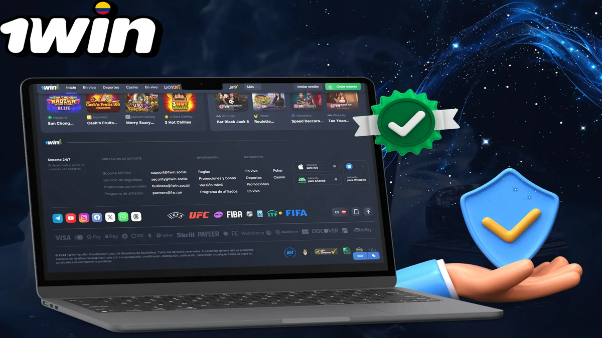

1win argentina: English guidance for a local geo
1win argentina searches often mix Spanish-language operator pages with English queries from bilingual readers. This page is an English geo landing: it explains how to think about language settings, payments mindset, responsible-gambling habits, and verification of local legality without pretending to be a regulator or a law firm.

Affiliate disclosure: partner links may appear near ratings or product modules. Commissions do not alter the advice to verify acceptance of customers from your location, to read cashier methods yourself, and to confirm any licensing claims on primary sources. We do not claim that 1win holds a UK Gambling Commission licence.
Start from the general 1win overview if you need the multi-vertical map, then return here for Argentina-facing practical notes. Deep links that pair well with this landing include 1win casino, 1win app, 1win login, and the informational checklist is 1win legal in argentina.
Geo pages go stale when they invent fixed payment lists or legal conclusions. Ours stays useful by teaching checks you can repeat whenever rules or cashiers change.
Language, UX, and bilingual reading habits
You may view English educational copy here while the live product UI appears in Spanish or another locale. That split is normal. What matters is that you understand the screens that govern money: registration declarations, cashier confirmations, bonus terms, and responsible-play tools.
| Situation | Risk | Habit |
|---|---|---|
| English blog vs Spanish UI | Misreading a clause | Translate carefully or switch UI language if available |
| Auto-translate tools | Garbled legal wording | Prefer official language toggles when present |
| Support chats | Rushed yes/no answers | Ask for written confirmation of important points |
| Promo banners | Incomplete conditions | Open the full T&Cs behind the banner |
- Switch the site or app language if a toggle exists and you need clearer terms.
- Save PDFs or screenshots of terms that applied when you opted into an offer.
- Do not rely on social-media summaries of rules.
- Re-read payment confirmations before approving transfers.
British English spelling is used on this site (organise, favour, licence as a noun). Operator pages may use different conventions; meaning in the live terms prevails over our educational phrasing.
Payments mindset for local readers
Payment availability for 1win argentina-facing accounts is defined by what the cashier shows after login, not by blog posts. Methods appear and disappear. Fees and timings vary. Ownership rules still matter: deposit and withdraw with instruments in your own name to reduce disputes.
| Check | Why | Action |
|---|---|---|
| Method list in your account | Region-specific | Open cashier while logged in |
| Identity verification | May gate withdrawals | Complete KYC through official upload flows |
| Currency shown | Conversion surprises | Confirm wallet currency before depositing |
| Bonus coupling | Wagering locks | Read T&Cs; see bonus code 1win concepts |
| Pending withdrawals | Rules can cancel on re-bet | Read withdrawal clauses |
- Log in via a verified path before judging available methods.
- Make a small test deposit only after limits and budgets are set.
- Avoid third-party payment agents who ask for your account password.
- Keep bank or wallet statements aligned with casino transactions.
- Ask support when a familiar method vanishes instead of using unofficial workarounds.

Crypto or local rails—if shown—still require the same discipline: correct addresses, awareness of irreversible transfers, and refusal of “support” scripts that ask you to share seed phrases. Seed phrases are never needed for ordinary casino cashier use.
Responsible-gambling mindset in everyday life
A healthy 1win argentina reader treats gambling as optional entertainment with a prepaid cost. Budgets sit beside other leisure spending. Sessions have clocks. Losses are not invoices that must be repaid through further play.
| Habit | Detail | Benefit |
|---|---|---|
| Prepaid entertainment budget | Money set aside before login | Removes pressure mid-session |
| Scheduled breaks | Alarms between short sessions | Counters trance-like tapping |
| Separate household money | No rent or food funds | Protects essentials |
| Adult-only access | 18+ accounts; credentials secured | Protects minors |
| Help-seeking | Local resources when harm appears | Earlier recovery support |
- Use operator limit tools early, not after a painful night.
- Prefer activities that still feel fun when stakes are small.
- Avoid alcohol when making deposit decisions.
- Talk to someone you trust if secrecy around play is growing.

Crash titles and fast slots can compress a lot of decisions into a few minutes. If that pace harms your judgement, switch to slower products—or stop entirely. Product education on 1win aviator and lobby literacy on 1win casino exist to inform, not to push volume.
Verify legality and licensing claims yourself
Whether online betting or casino play is lawful for you depends on local regulations that can change, and on whether a given operator accepts customers from your location. This site’s companion article is 1win legal in argentina provides an informational checklist. It is not legal advice.
- Read primary local rules or official summaries for your jurisdiction.
- Check the operator’s own eligibility and restricted-country notices.
- Verify any licence names or numbers on public registers where they exist.
- Ignore rumours that “everyone plays so it must be fine”.
- Stop if you are not eligible; do not seek evasive workarounds.
- We do not invent licence numbers for 1win.
- We do not claim UKGC licensing for 1win.
- We do not promise continued availability in any city or province.
- We do encourage age gates: adults 18+ only.
When legality is unclear, the cautious path is not to deposit while you seek clarification from competent local sources. Educational reading can continue; real-money play should wait.
| Source type | Use for | Avoid |
|---|---|---|
| Official government publications | Lawful activity boundaries | Anonymous forum legal takes |
| Operator terms and footers | Eligibility and disclosures | Edited screenshots on social media |
| Public licence registers | Confirming stated licence claims | Unverifiable badge images alone |
| Your own bank or counsel | Personal financial or legal questions | Strangers in comment sections |
Further practical notes for careful readers
Readers using 1win argentina materials as orientation should keep three habits in parallel: verify the official access path, set entertainment budgets before depositing, and re-read operator terms whenever a promotion or product area changes. Those habits travel with you from homepage summaries into specialist articles without requiring you to memorise every interface label.
When something on a third-party site conflicts with the live cashier or written terms, favour the live product and the written terms. Screenshots age quickly. Informal chat summaries omit footnotes. Your own notes, dated and linked to the version of the terms you saw, will serve you better during support conversations than a collage of social-media claims.
Keeping expectations honest over time
Technical hygiene supports the same calm approach. Keep devices updated, refuse unsolicited installers, and treat unexpected login prompts as hostile until proven otherwise. If you share a household device, log out fully and protect credentials so minors cannot reach real-money areas. Adults aged 18 and over only may hold accounts on the framing used throughout 1win argentina coverage on this site.
Entertainment outcomes vary from session to session. A short run of favourable results does not prove a method; a short run of losses does not demand recovery stakes. The house edge in wagering products is structural. Your advantage as a consumer sits in preparation, limits, and the freedom to stop—not in predicting each round.
Pausing, reviewing, and returning with intent
If you need a deliberate pause, use the operator’s time-out or self-exclusion tools where available and seek local support resources when gambling stops feeling optional. Educational pages covering 1win argentina remain available for later reading; real-money play can wait. That separation—learn freely, stake only when eligible and prepared—is the through-line of this English informational site for Argentina-facing readers.
Return to internal links when you change topics rather than trying to hold every detail in working memory. Specialist pages exist so each subject can be thorough without turning every article into an encyclopaedia. Move with intent, verify as you go, and keep leisure spending inside a plan you would still respect tomorrow.
Product-area map you can reuse on any visit
Whether you open sports, casino, live tables or crash titles, keep the same mental map: entertainment first, verification second, stake size third. The diagram below summarises the product buckets most multi-vertical brands expose inside one account.
- Sports needs market-rule literacy before kick-off or tip-off.
- Casino lobbies need info-panel reading before the first spin.
- Live tables add connection quality as a practical factor.
- Crash titles add a cash-out timing decision that does not remove house edge.
| Check | What good looks like | Red flag |
|---|---|---|
| Domain authenticity | Typed or bookmarked official URL | Links from cold DMs or pop-ups |
| Age gate | Clear 18+ requirement before play | No age notice anywhere |
| Responsible tools | Deposit/loss/time limits visible | No limit controls at all |
| Terms access | Bonus and account terms linked near offers | Promo claims without T&Cs |
Evaluation sequence before any deposit
A calm sequence beats improvisation. Work left to right through domain authenticity, age eligibility, cashier visibility, limit tools and written terms. Skipping a step is how phishing pages and misunderstood bonuses slip through.
- Confirm you are on a genuine domain.
- Confirm you meet the 18+ requirement where you live.
- Open the cashier and note methods shown to your account.
- Locate deposit, loss and time-limit tools if offered.
- Read bonus and account terms before accepting any offer.
| Parameter | Safer habit | Why |
|---|---|---|
| Bankroll | Set a loss limit before opening the lobby | Stops chase behaviour mid-session |
| Time | Use a reality-check or phone timer | Short rounds compress time perception |
| Games | Pick one product area per session | Reduces impulsive switching |
Responsible gambling
18+. Casino games, sports betting and crash titles discussed on this site are intended for adults aged 18 and over only. Gambling can be addictive - please play responsibly and never stake more than you can afford to lose.
- International support information: BeGambleAware.
- Advice and treatment resources: GamCare.
- If you are in Argentina, also look for locally available counselling and helpline resources through public health channels, and use any deposit/loss/time limits the operator provides.
1win Argentina Guide publishes informational reviews and checklists. We do not invent licence numbers or claim UK Gambling Commission status for operators without verification in data/casinos/. Nothing on this site is financial or gambling advice, and no outcome is promised.